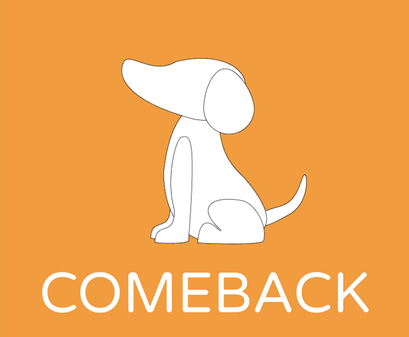
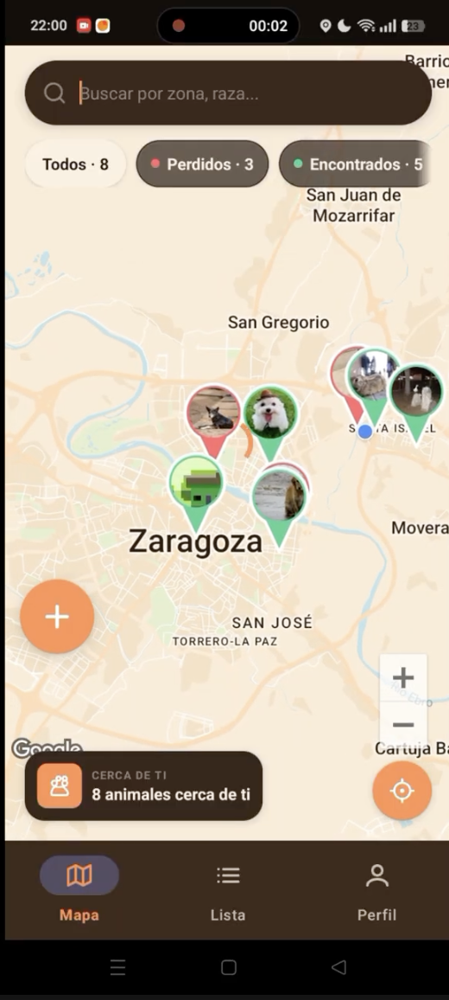
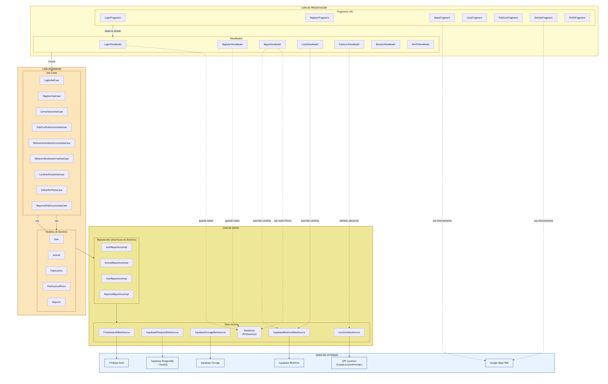
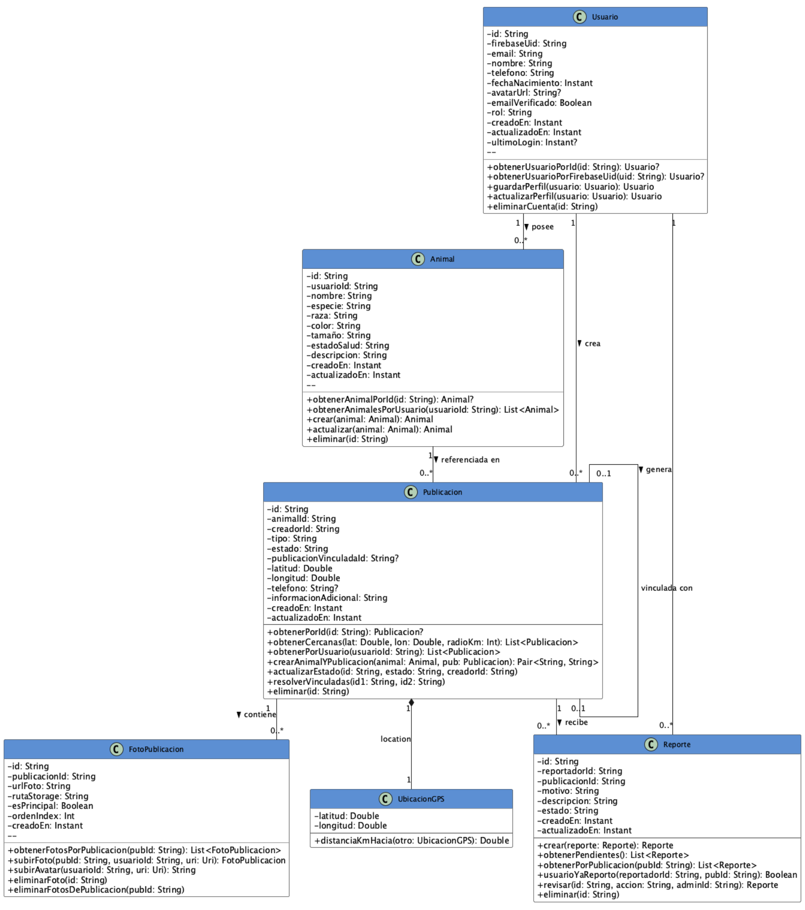
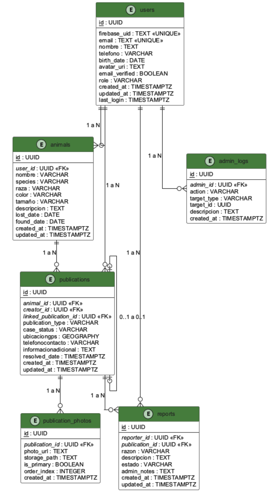
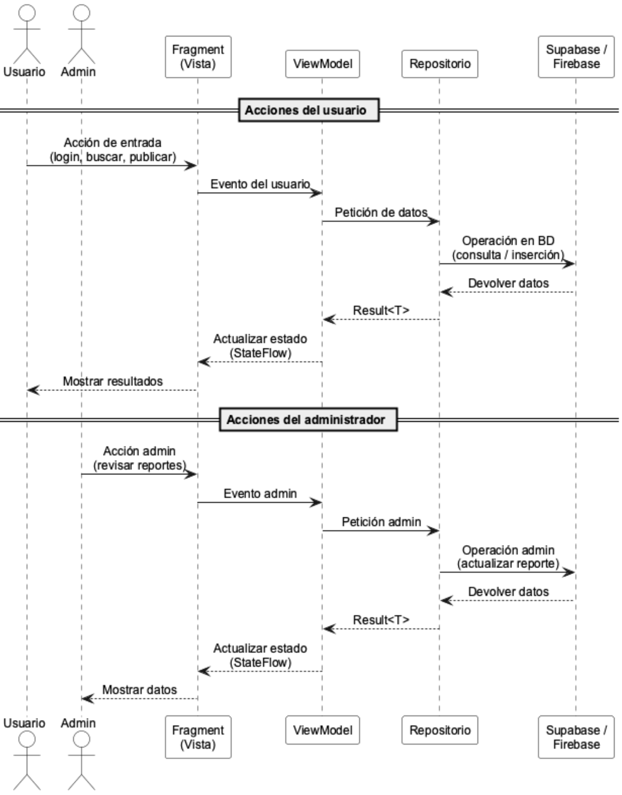
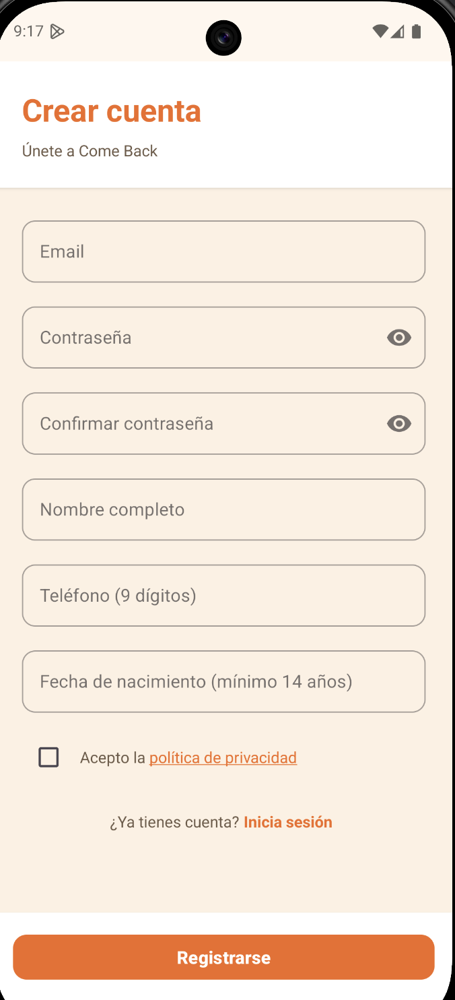

Reúne a cada mascota perdida con su hogar — una comunidad geolocalizada en tiempo real.
Qué vamos a ver
Cada año se pierden miles de mascotas.
La información, no.
La pérdida y el abandono siguen siendo un problema real. Hoy todo se difunde por redes sociales, generando información desorganizada y fragmentada.
Redes sociales
Instagram, Facebook o WhatsApp: información dispersa, sin orden ni seguimiento.
Apps comunitarias
Alternativas como Welppy dependen por completo de la masa de usuarios activos en la zona.
Collares GPS
FindPet o Tractive ofrecen tiempo real, pero exigen hardware adicional de pago.
Una app que conecta a dos perfiles.
Cuantos más usuarios activos, más útil es la plataforma.
Dueño
Publica a su mascota perdida con foto, descripción y ubicación GPS para que la comunidad la localice.
Colaborador ciudadano
Reporta un avistamiento desde la calle: sube foto y GPS para conectarlo con el dueño.
Panel de administración
Rol ADMIN para moderar contenido inapropiado: desestimar reportes o eliminar publicaciones.

El objetivo
Facilitar el reencuentro de animales perdidos con sus dueños.
Geolocalización
Publica y consulta animales perdidos en tu radio geográfico, sobre un mapa en tiempo real.
Base de datos centralizada
Toda la información del animal — foto, descripción, ubicación, fecha y estado — en un único lugar.
Comunidad solidaria
Dueños que buscan y colaboradores que ayudan, unidos por el bienestar animal.
Destinatarios
Cualquier persona implicada en el bienestar animal. Dos grandes franjas:
Público joven, nativo digital y familiar con apps y dispositivos móviles.
Adultos implicados en la acción comunitaria, con interés por colaborar.
Metodología ágil, ciclo de vida incremental
Seis sprints — seis entregas al cliente — de octubre 2025 a abril 2026.
Stack tecnológico
Kotlin
Lenguaje oficial de Android. Corrutinas, sealed classes, extension functions y null-safety como pilares del proyecto.
Firebase Auth
Gestiona el hash de contraseñas, el flujo OAuth con Google y emite JWT firmados para cada petición.
Supabase + PostGIS
PostgreSQL con extensión geoespacial. Row Level Security, Storage para fotos y API REST autogenerada.
StateFlow + ViewModel
Gestión de estado reactiva con Jetpack. La app sobrevive a rotaciones de pantalla sin recargar datos.
Ktor HTTP Client
Cliente HTTP asíncrono de JetBrains. Apunta directamente a la API REST de Supabase sin SDK intermedio, con interceptor JWT automático.
Google Maps SDK + android-maps-utils
Mapa interactivo con marcadores personalizados tipo lágrima y clustering automático de publicaciones cercanas.
Glide + Compressor
Glide carga y cachea imágenes desde Storage. Compressor reduce fotos de ~4 MB a ~400 KB antes de subirlas.
Hilt
Inyección de dependencias sobre Dagger 2. Siete módulos como singletons gestionan el ciclo de vida de todas las dependencias.
Clean Architecture por capas
Regla de dependencia estricta: las capas internas no conocen a las externas. La lógica queda independiente del framework, la base de datos y la interfaz.
Presentación
Fragments, ViewModels y layouts XML. El estado de la UI se expone con StateFlow.
Datos
Repositorios sobre Firebase Auth y Supabase, accedidos con el cliente HTTP Ktor.
Dominio
Modelos puros, interfaces de repositorios y casos de uso (Login, Register, Publish). Sin dependencias de Android.

Cuatro niveles: Presentación (Fragments + ViewModels), Dominio (interfaces de repositorios, modelos y casos de uso), Datos (repositorios y data sources) y Servicios externos. Firebase Auth emite el JWT y Supabase persiste los datos vía Ktor.

Estructura de clases
Seis entidades del modelo de dominio en Kotlin, sin dependencias de Android.

Modelo de datos
Seis entidades en PostgreSQL estructuran usuarios, animales y sus publicaciones.

Flujo de publicación
Interacción entre capas al publicar un animal perdido o encontrado.
De la arquitectura al producto
Autenticación dual
Firebase Auth emite JWT enviados a Supabase vía Ktor; RLS valida el acceso a nivel de base de datos.
Mapa PostGIS + clustering
ST_DWithin en WGS 84 vía RPC. Marcadores en lágrima con foto circular; agrupación con android-maps-utils.
Publicación atómica
RPC crea Animal y Publicacion en una sola transacción. Fotos subidas en paralelo con corrutinas Kotlin.
Inyección con Hilt
Siete módulos (App, Data, Repository, Auth, Location, Storage, UseCase) como singletons.
Estado reactivo
StateFlow + repeatOnLifecycle: las colecciones se cancelan al ir a segundo plano, evitando memory leaks.
Derecho al olvido (RGPD)
Eliminación en cascada: Firebase → Supabase → Storage. Confirmación en dos pasos obligatoria.
Pruebas
Casos funcionales en dispositivo real y emulador: validación de formularios, conectividad y compatibilidad.
La app en acción
Un recorrido por el flujo completo: del registro al reencuentro.


Plazos cumplidos, esenciales implementados
Todas las funcionalidades clave, verificadas en dispositivo real y emulador:
Decisiones técnicas destacadas
Firebase Auth
Elegido por su robustez y el soporte nativo de inicio de sesión con Google, sin gestionar el hash de contraseñas manualmente.
Supabase + PostGIS
Base de datos relacional con extensión geoespacial. Coordinar los dos sistemas —especialmente el manejo del token JWT— fue uno de los desafíos más interesantes del proyecto.
Conocimientos adquiridos y próximos pasos
Experiencia práctica en Clean Architecture + MVVM, Kotlin con corrutinas, integración de dos backends, PostGIS, Hilt y navegación Jetpack.
Chat en tiempo real
Mensajería directa con Supabase Realtime, sin exponer el teléfono públicamente.
Gamificación
Rangos e insignias por actividad para incentivar la colaboración y la retención.
Notificaciones push
Firebase Cloud Messaging: avisa a usuarios cercanos cuando se publica un animal.
Démosles a las mascotas perdidas una nueva oportunidad de volver a casa.
¿Cómo manejamos el JWT de Firebase?
¿Qué es?
Un JSON Web Token que Firebase Auth emite cuando el usuario inicia sesión. Identifica al usuario logueado y se refresca automáticamente cada hora.
¿Dónde se usa?
Interceptor en DataModule.kt
val user = firebaseAuth.currentUser
if (user != null) {
user.getIdToken(false)
.addOnSuccessListener {
req.headers["Authorization"] =
"Bearer ${it.token}"
}
}
}
Resultado: el usuario nunca gestiona el token manualmente — Firebase lo refresca en silencio y Ktor lo adjunta en cada llamada.
¿Qué es StateFlow y cómo lo usamos?
¿Qué es?
Un Flow caliente de Kotlin Coroutines que almacena siempre el último valor emitido y lo entrega inmediatamente a cualquier nuevo colector.
¿Por qué no LiveData?
StateFlow es independiente de Android: funciona en el dominio sin importar androidx. Más potente con operadores de Flow (map, filter, combine).
Cómo lo usamos
¿Qué es Ktor y cómo lo usamos?
¿Qué es?
Framework HTTP cliente/servidor de JetBrains escrito en Kotlin puro. Totalmente asíncrono mediante corrutinas, sin callbacks ni threads.
¿Por qué Ktor y no Retrofit?
Retrofit usa anotaciones y reflexión en tiempo de compilación. Ktor es más idiomático en Kotlin, con un DSL más expresivo y soporte nativo de corrutinas sin adaptadores adicionales.
Cómo lo usamos
¿Qué es Hilt y cómo lo usamos?
¿Qué es?
Librería de inyección de dependencias de Google para Android, construida sobre Dagger 2. Gestiona el ciclo de vida de las dependencias con anotaciones en tiempo de compilación.
¿Por qué Hilt y no manual?
La inyección manual escala mal: con 7 módulos y múltiples capas, Hilt elimina el boilerplate y garantiza que cada dependencia tenga el scope correcto (singleton, viewmodel, fragment…).
Nuestros 7 módulos
¿Por qué Firebase y Supabase?
Firebase Auth
Supabase
Punto de unión: firebase_uid actúa como clave foránea en Supabase, sincronizando ambos sistemas sin duplicar la lógica de autenticación.
¿Por qué Clean Architecture?
RLS y PostGIS: seguridad y geodatos
Row Level Security (RLS)
Característica nativa de PostgreSQL que aplica políticas de acceso a nivel de fila, dentro de la base de datos.
PostGIS
Extensión de PostgreSQL que añade tipos y funciones geoespaciales. Trabajamos en WGS 84 (el mismo sistema que GPS).
Cumplimiento RGPD y LOPD
Derecho al olvido (Art. 17 RGPD)
Otras medidas
Fragments y ViewBinding
¿Qué es un Fragment?
Una pantalla completa de la app. Tiene dos archivos: MapFragment.kt (lógica) y fragment_map.xml (vistas). No sabe nada de Supabase ni Firebase.
¿Qué es ViewBinding?
El puente entre el XML y el Kotlin. Android genera automáticamente una clase con un atributo por cada vista, sin findViewById. Es type-safe: el compilador verifica que el ID existe.
Patrón _binding — ¿por qué dos variables?
¿Qué es un ViewModel?
¿Qué hace?
Gestiona la lógica de la pantalla sin tocar ninguna vista. Habla con los repositorios y expone el resultado via StateFlow. No sabe que existe el Fragment.
¿Por qué no poner la lógica en el Fragment?
El Fragment se destruye al rotar el móvil. Si la petición de red estaba en el Fragment, se cancela y vuelve a empezar. El ViewModel sobrevive a las rotaciones.
viewModelScope: el contenedor de coroutines del ViewModel. Cuando el ViewModel se destruye, cancela automáticamente todas sus coroutines. No hay peticiones huérfanas.
¿Qué son las Coroutines?
¿Qué son?
La forma de ejecutar tareas que tardan tiempo (red, BD) sin bloquear el hilo principal (el que dibuja la pantalla). Si lo bloqueas más de 5 segundos, Android mata la app.
La palabra clave suspend
Indica que una función puede pausarse mientras espera y reanudarse cuando tiene el resultado, sin ocupar el hilo mientras espera. Solo puede llamarse desde otra función suspend o desde una coroutine.
Relación con StateFlow y ViewBinding
Si el usuario rota el móvil, el ViewModel sobrevive → viewModelScope sobrevive → las coroutines en curso no se interrumpen.
Sealed Classes — estados de la UI
¿Qué son las Sealed Classes?
Un tipo con un número cerrado de subtipos conocidos en tiempo de compilación. El compilador obliga a manejar todos los casos en el when, eliminando los estados no contemplados.
¿Por qué no un enum o un Boolean?
Cada estado puede llevar datos propios. Success lleva la lista de publicaciones; Error lleva el mensaje. Un enum no puede hacer eso.
MapState en la app
El when en el Fragment es exhaustivo: si añades un nuevo estado y olvidas manejarlo, el compilador da error.
Repositorios: Dominio vs Datos
Dominio — la interfaz (el contrato)
Define QUÉ se puede hacer, sin decir CÓMO. Es Kotlin puro, sin imports de Android ni Supabase. El ViewModel solo conoce esta interfaz.
suspend fun getPublicationsNearby(): Result<List<Publication>>
}
Datos — la implementación
Define CÓMO se hace realmente. Llama a Supabase con Ktor, convierte DTOs a modelos con .toDomain().
// aquí llama a Supabase con PostGIS
}
RepositoryModule — el conector
Le dice a Hilt: "cuando alguien pida PublicationRepository, dale PublicationRepositoryImpl". El ViewModel nunca sabe que existe Supabase.
GeoPoint, Haversine y estrategias geográficas
¿Qué es GeoPoint?
Modelo de dominio propio (domain/model/GeoPoint.kt). No es de Google Maps ni de PostGIS. Agrupa latitud y longitud con validación en el constructor, evitando confundir el orden de los parámetros.
Fórmula Haversine
Calcula la distancia real en km entre dos coordenadas GPS sobre la esfera terrestre. Se usa en cliente para calcular distancias una vez que las publicaciones ya están descargadas del servidor.
Dos estrategias de búsqueda geográfica
PostGIS en servidor
Solo ACTIVO · más eficiente
Haversine en cliente
ACTIVO + RESUELTO
ListFragment necesita mezclar estados (activo y resuelto), lo que complica el filtrado en servidor. Haversine en cliente lo resuelve con menor coste de desarrollo.
¿Por qué refreshIfStale y no WebSockets?
¿Qué hace refreshIfStale?
Se llama en onResume() cada vez que vuelves al mapa. Si los datos tienen más de 60 segundos hace una nueva petición; si son frescos, no hace nada.
Es una decisión consciente
Una app de animales perdidos no necesita actualizaciones al milisegundo. Un retraso de hasta 60 segundos es perfectamente aceptable para el caso de uso.
Navigation Component
¿Qué es?
Gestiona la navegación entre Fragments de forma centralizada. Toda la navegación está definida en nav_graph.xml. Una sola MainActivity contiene un NavHostFragment donde se muestran todos los Fragments.
SafeArgs
Genera clases tipo-seguras para pasar datos entre pantallas. Si el argumento no existe → error en compilación, no en ejecución. Evita los Bundle con strings mágicos.
popUpTo + popUpToInclusive
Al publicar un animal, limpia el back stack hasta el mapa. El usuario no puede volver al formulario pulsando atrás — evita publicar dos veces por accidente.
Single Activity
Una sola MainActivity con un NavHostFragment. Los Fragments se intercambian dentro de ella. Ventaja: contexto compartido, transiciones fluidas, BottomNavigation gestionada en un solo lugar.
Los 4 pilares de la POO en la app
Encapsulación
El estado interno es privado. Solo el ViewModel puede escribir en _uiState; los Fragments solo leen uiState (solo lectura).
Abstracción
PublicationRepository define QUÉ se puede hacer, sin decir CÓMO. El ViewModel no sabe si los datos vienen de Supabase, de un mock o de un archivo local.
Herencia
BasePublishViewModel tiene la lógica común de publicación. PublishLostAnimalViewModel y PublishFoundAnimalViewModel heredan y añaden lo específico de cada flujo.
Polimorfismo
El ViewModel recibe un PublicationRepository. En producción recibe PublicationRepositoryImpl; en tests recibe un MockPublicationRepository. El ViewModel no nota la diferencia.
Glide e Intents
Glide — carga de imágenes
Librería para cargar y mostrar imágenes desde URLs de Supabase Storage de forma eficiente. Gestiona automáticamente:
Intents — llamadas y compartir
La app no envía WhatsApp directamente. Usa Intents de Android: mensajes al sistema operativo para que él abra la app adecuada.
El usuario elige desde qué app compartir. La app no elige por él.